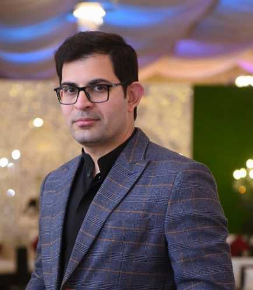

Waseem Hassan

I am currently serving as a Postdoc in Human Centered Computing (HCC) at the University of Copenhagen, Denmark. I am a part of the Touchless project which aims to develop new Touchless haptic technologies and facilitate novel haptic experiences.
My previous research mainly at Haptics Lab (Kyung Hee University, South Korea) focused on generating digital haptic texture contents for virtual and augmented reality. Using an amalgam of psychophysics and machine learning ecosystems, my research attempts to overcome the lack of haptic contents availability in the digital environment. I have also worked on various projects that included designing a hardware interface for delivering haptic content. The hardware interfaces include vibrotactile actuators, custom-made soft pneumatic bladders, wearable haptic devices, etc.
For more details, check my CV or hit me up on my email.
Publications
2024
J14 - Pneumatically Controlled Wearable Tactile Actuator for Multi-Modal Haptic Feedback
Ahsan Raza, , Seokhee Jeon
IEEE Access 2024
Pdf
J13 - Deep Encoder-Decoder Network Based Data-driven Method for Impact Feedback Rendering on Head During Earthquake
Joolekha Bibi Joolee, Mohammad Shadman Hashem, , Seokhee Jeon
Virtual Reality 2024
Pdf
2023
C13 - Predicting Perceptual Haptic Attributes of Textured Surface from Tactile Data Based on Deep CNN-LSTM Network
Mudassir Ibrahim Awan*, , Seokhee Jeon
Virtual Reality Software and Technology (VRST) 2023
Pdf
J12 - Establishing Haptic Texture Attribute Space and Predicting Haptic Attributes from Image Features using 1D-CNN
, Joolekha Bibi Joolee, Seokhee Jeon
Scientific Reports 2023
Pdf
C12 - Model-Mediated Teleoperation for Remote Haptic Texture Sharing: Initial Study of Online Texture Modeling and Rendering
Mudassir Ibrahim Awan*, Tatyana Ogay*, , Dongbeom Ko, Sungjoo Kang, Seokhee Jeon
IEEE International Conference on Robotics and Automation (ICRA) 2023
Pdf
Video
J11 - VR Unseen Gaze: Inducing Feeling of Being Stared at in Virtual Reality
CheolWoo Lee, Seokhee Jeon,, HyeongYeop Kang
Virtual Reality 2023
Pdf
Video
2022
J10 - Multi-mode Soft Haptic Thimble for Haptic Augmented Reality Based Application of Texture Overlaying
Aishwari Talhan, Sanjeet Kumar, Hwangil Kim, , Seokhee Jeon
Displays 2022
Pdf
J9 - HapWheel: Bringing In-Car Controls to Driver’s Fingertips by Embedding Ubiquitous Haptic Displays into a Steering Wheel
, Ahsan Raza, Muhammad Abdullah, Mohammad Shadman Hashem, Seokhee Jeon
IEEE Transactions on Intelligent Transportation Systems 2022
Pdf
Video
J8 - Soft Pneumatic Fingertip Actuator Incorporating a Dual Air Chamber to Generate Multi-Mode Simultaneous Tactile Feedback
Mohammad Shadman Hashem, Joolekha Bibi Joolee, Seokhee Jeon
Applied Sciences 2022
Pdf
2020
J7 - A Pneumatically-Actuated Mouse for Delivering Multimodal Haptic Feedback
Hwangil Kim, Aishwari Talhan, Seokhee Jeon Seokhee Jeon
Applied Sciences 2020
Pdf
2019
C11 - Interactive Virtual-Reality Fire Extinguisher With Haptic Feedback
Sang-Woo Seo, SeungJoon Kwon, , Aishwari Talhan, Seokhee Jeon
ACM Symposium on Virtual Reality Software and Technology (VRST) 2019
Pdf
J6 - Authoring New Haptic Textures Based on Interpolation of Real Textures in Affective Space
Arsen Abdulali, Seokhee Jeon
IEEE Transactions on Industrial Electronics 2019
Pdf
Video
J5 - Perceptually Correct Haptic Rendering in Mid-Air Using Ultrasound Phased Array
Ahsan Raza, Tatyana Ogay, Inwook Hwang, Seokhee Jeon
IEEE Transactions on Industrial Electronics 2019
Pdf
2018
C10 - Haptic Texture Authoring: A Demonstration
Arsen Abdulali, Seokhee Jeon
AsiaHaptics 2018
Pdf
Video
C9 - Hands-On Demonstration of Heterogeneous Haptic Texturing of Mesh Models Based on Image Textures
Arsen Abdulali, Baek Seung Jin, Seokhee Jeon
AsiaHaptics 2018
Pdf
Video
C8 - Painting Skill Transfer Through Haptic Channel
Ahsan Raza, Muhammad Abdullah, Arsen Abdulali, Aishwari Talhan, Seokhee Jeon
AsiaHaptics 2018
Pdf
C7 - HapticDrone: An Encountered-Type Kinesthetic Haptic Interface With Controllable Force Feedback: Example of Stiffness and Weight Rendering
Muhammad Abdullah, Minji Kim, Yoshihiro Kuroda, Seokhee Jeon
IEEE Haptics Symposium 2018
Pdf
Video
C6 - Virtual Reality Bicycle with Data-Driven Vibrotactile Responses from Road Surface Textures
Ruslan Rakhmatov, Arsen Abdulali, Minji Kim, Seokhee Jeon
IEEE Games, Entertainment, Media Conference (GEM) 2018
Pdf
C5 - Haptic logos: Insight into the Feasibility of Digital Haptic Branding (Nominated for Best Paper Award)
Muhammad Abdullah, Ahsan Raza, Seokhee Jeon
Eurohaptics 2018
Pdf
2017
J4 - Towards Universal Haptic Library: Library-Based Haptic Texture Assignment Using Image Texture and Perceptual Space
Arsen Abdulali, Muhammad Abdullah, Sang Chul Ahn, Seokhee Jeon
IEEE Transactions on Haptics 2017
Pdf
Video
C4 - HapticDrone: An Encountered-Type Kinesthetic Haptic Interface with Controllable Force Feedback: Initial Example for 1D Haptic Feedback
Muhammad Abdullah, Minji Kim, Yoshihiro Kuroda, Seokhee Jeon
User Interface Software and Technology (UIST) 2017
Pdf
Video
J3 - Multi-Model-Based Interactive Authoring Environment for Creating Shareable Medical Knowledge
Taqdir Ali, Maqbool Hussain, Wajahat Ali Khan, Muhammad Afzal, Jamil Hussain, Rahman Ali, Arif Jamshed, Byeong Ho Kang, and Sungyoung Lee
Computer Methods And Programs in Biomedicine 2017
Pdf
C3 - Perceptual Thresholds for Haptic Texture Discrimination (Best Paper Award)
Arsen Abdulali, Seokhee Jeon
Ubiquitous Robots and Ambient Intelligence (URAI) 2017
Pdf
C2 - Sample Selection of Multi-Trial Data for Data-Driven Haptic Texture Modeling
Arsen Abdulali, Seokhee Jeon
IEEE World Haptics Conference (WHC) 2017
Pdf
2016
J2 - Stimuli-Magnitude-Adaptive Sample Selection for Data-Driven Haptic Modeling
Arsen Abdulali, Seokhee Jeon
Entropy 2016
Pdf
C1 - Evaluating Differences Between Bare-Handed and Tool-Based Interaction in Perceptual Space
Seokhee Jeon
IEEE Haptics Symposium 2016
Pdf
J1 - MRPack: Multi-Algorithm Execution Using Compute-Intensive Approach in Mapreduce
Muhammad Idris, Shujaat Hussain, Muhammad Hameed Siddiqi, Hafiz Syed Muhammad Bilal, Sungyoung Lee
Plos One 2016
Pdf
Domestic Conferences
C3 - Haptic Texture Mapping on Real world 3D Object using Surface Texture and Haptic Model
Joolekha Bibi Joolee, Mudassir Ibrahim Awan, Seokhee Jeon
Korean Computer Congress 2019
C2 - Building Haptic Texture Perceptual Space From Real-Life Textured Surfaces Using Multidimensional Scaling (Best Paper Award)
Seokhee Jeon
Korean Computer Congress 2016
Pdf
C1 - Towards Automatic Haptic Texture Authoring Based on Image Texture Feature: An Initial Study
Noman Akbar, Arsen Abdulali, Seokhee Jeon
Korean Computer Congress 2015
Pdf
Demonstrations/Work-in-Progress/Student Challenges
Friction Wheel: Bringing in-Car Controls to Driver’s Fingertips by Embedding Dual Ubiquitous Haptic Friction Displays into a Steering Wheel (Best Student Innovation Challenge Award)
Ahsan Raza, Muhammad Abdullah, Seokhee Jeon
Student Innovation Challenge, IEEE World Haptics Conference 2019.
Heterogeneous Haptic Texture Assignment to Mesh Models Based on Image
Seokhee Jeon
Demonstration, SIGGRAPH 2019
Tactile and Kinesthetic Feedback for Safety Experience/Training Simulators: A Case Study of Fire Extinguisher
Aishwari Talhan, Tatyana Ogay, Hwangil Kim, and Seokhee Jeon
Demonstration, SIGGRAPH 2019
Authoring New Haptic Textures Based on Interpolation of Real Textures in Affective Space: A Demo
Arsen Abdulali, Seokhee Jeon
Demonstration, IEEE Haptics Symposium 2018
Towards Universal Haptic Library Library-Based Haptic Texture Selection Using Image Texture
Seokhee Jeon
WIP, Eurohaptics 2016
..
Towards Universal Haptic Library: Library-Based Haptic Texture Selection Using Image Texture
Arsen Abdulali,Seokhee Jeon
Demonstration, Eurohaptics 2016
Patents
Apparatus for Controlling Electronic Function Module in the Vehicle using Steering Wheel with Dual Ubiquitous Haptic Sensor
Ahsan Raza, Muhammad Abdullah, and Seokhee Jeon
South Korean patent
1022757610000,
registered July 5, 2021
Pdf
Thesis
PhD - Computer Engineering
Kyung Hee University, South Korea
Thesis:Towards Haptic Texture Content Library: Texture Synthesis Through Automatic Model Assignment and Texture Authoring in Haptic Attribute Space
Advisor: Seokhee Jeon
Thesis
Presentation
MS - Computer Engineering
Kyung Hee University, South Korea
Thesis:Towards Universal Haptic Library– Library-Based Haptic Texture Assignment Using Image Texture
Advisor: Seokhee Jeon
Thesis
Presentation
Professional Services
1. IEEE Transactions on Haptics (2016 - current)
2. IEEE Haptics Symposium (2016 - current)
3. IEEE World Haptics Conference (2016 - current)
4. EuroHaptics Conference (2018 - current)
5. AsiaHaptics Conference (2016 - current)
6. IEEE Transactions on Industrial Electronics (2018 – special issue on Haptics)
7. IEEE Robotics and Automation Letters (2019, 2023)
8. IEEE Virtual Reality Conference (2018 - current)
9. ACM Augmented Humans Conference (2021)
10. IEEE Transactions on Vehicular Technology (2022)
11. IEEE International Conference on Robotics and Automation (ICRA) (2024)
12. ACM Conference on Human Factors in Computing Systems (CHI) (2024)